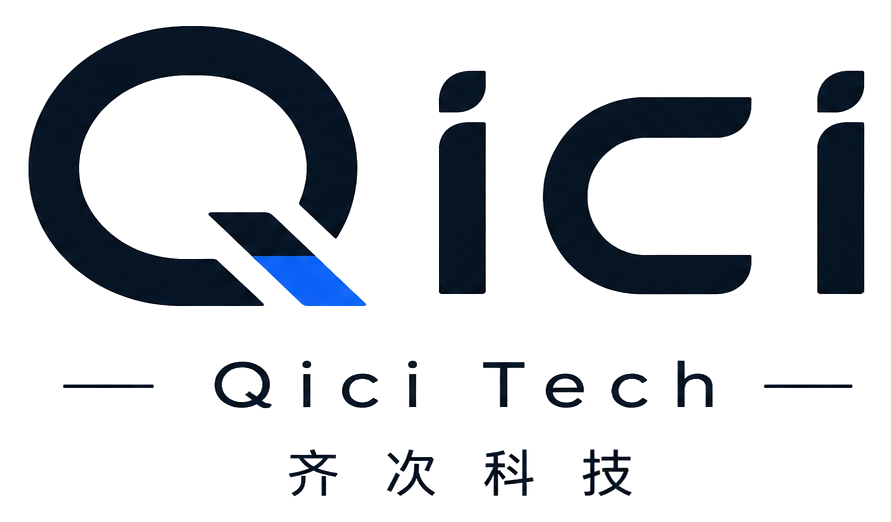
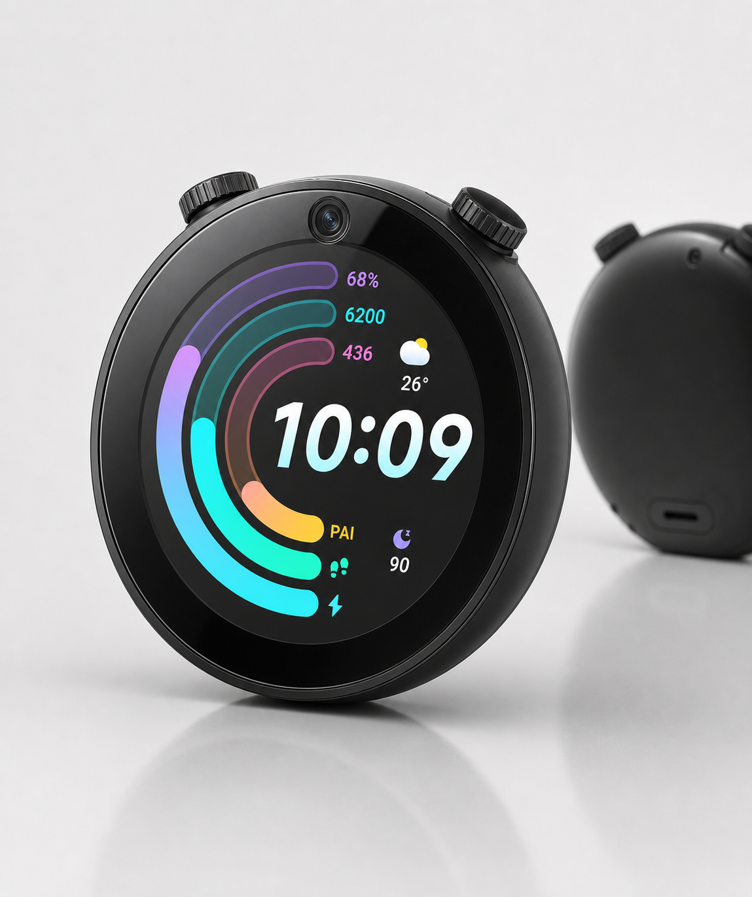
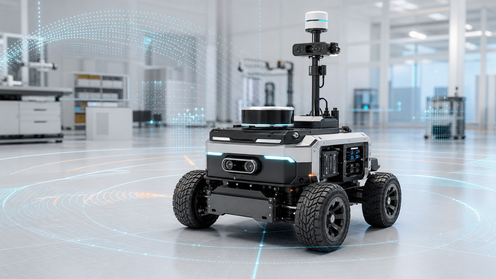

产品定义
从真实需求出发，拆解输入、输出、交互、场景和成本约束，确定产品该成为什么。



Business
启点是我们对个人 AI 硬件的探索；机器人与空间智能，是我们把感知、定位和移动能力落到真实场景里的另一条主线。
Capabilities
从真实需求出发，拆解输入、输出、交互、场景和成本约束，确定产品该成为什么。
围绕屏幕、麦克风、摄像头、旋钮、无线通信和外设接口，完成可运行硬件原型。
把语音、视觉、触控、旋钮和屏幕反馈组合成更自然的 AI 使用方式。
围绕雷达 SLAM、视觉定位和传感器融合，让设备理解自己身处的空间。
结合移动底盘、结构、电控、传感器和控制算法，推进机器人从原型到样机。
面向教育、科研、巡检、陪伴和定制场景，提供模块化机器人与智能硬件方案。
Position
智能硬件让 AI 有身体，机器人让 AI 进入空间。Qici Tech 要做的，是把感知、交互、移动和创造能力组合成可以被使用、被改造、被部署的产品。
Contact